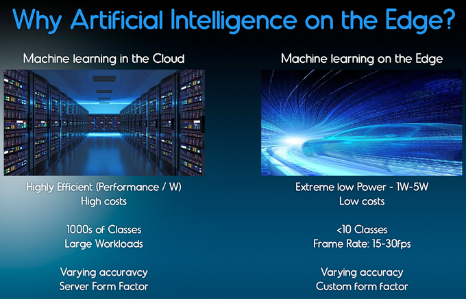
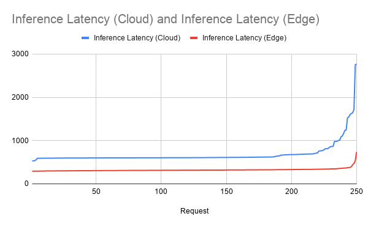

Edge AI is a system that uses Machine Learning algorithms to process data generated by a hardware device at the local level. The device does not need to be connected to the Internet to process such data and make decisions in real time, in a matter of milliseconds. This considerably reduces the communication costs derived from the cloud model. In other words, Edge AI takes the data and its processing to the closest point of interaction with the user, whether it is a computer, an IoT device or an Edge server.
An example of this technology can be seen in the speakers of Google, Alexa or the Apple Homepod, which have learned words and phrases through Machine Learning and then stored them locally on the device. When the user communicates something to applications such as Siri or Google, they send the voice recording to an Edge network where it is passed to text via AI and a response is processed. Without an Edge network the response time would be seconds, with Edge the times are reduced to less than 400 milliseconds.
Some of the main benefits offered by Edge AI are:
- Reduces costs and latency times for an improved user experience This facilitates the integration of wearable technologies focused on the user experience, where you interact in real time to make payments, or where bracelets monitor your exercise and sleep patterns.
- It increases the level of security in terms of data privacy through local processing. Data is no longer shared in a centralized cloud.
- Technically, the reduction in required bandwidth should lead to a reduction in the costs of the contracted internet service.
- Edge technology devices do not require specialized maintenance by data scientists or AI developers. The graphic data flows are automatically delivered for monitoring, therefore, it is an autonomous technology.